السلسلة 18
السيارة (صنف B) · 40 سؤال بالصوت. حاول تجاوب بوحدك، من بعد شوف الجواب.
السؤال 1
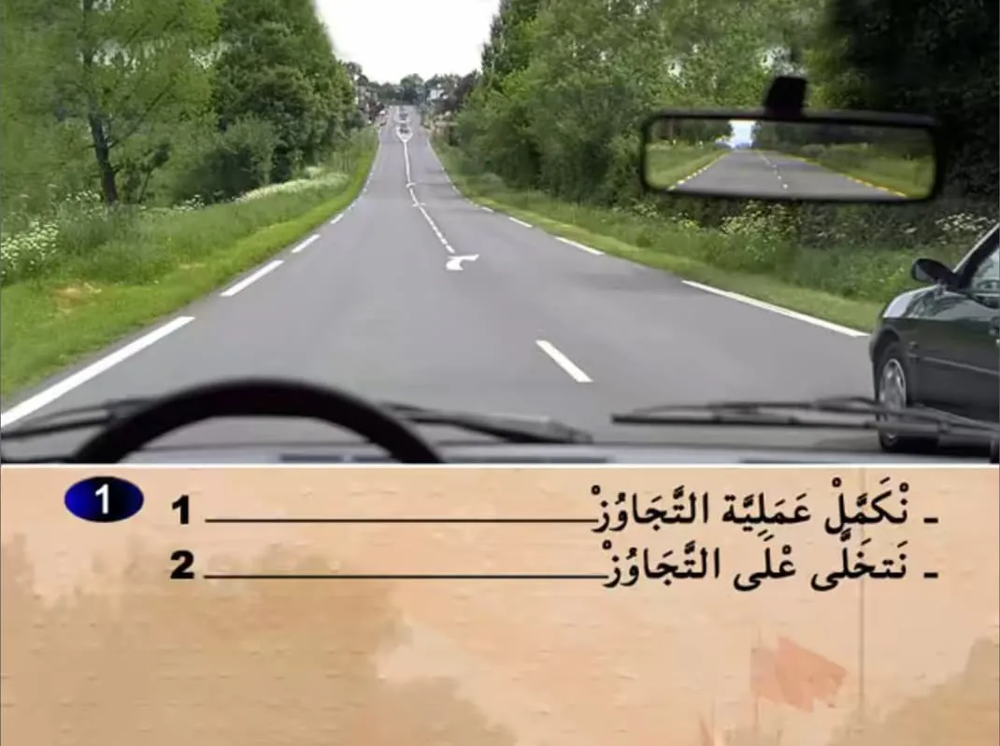
بيّن الجواب
الجواب الصحيح: 1
التشوير الأفقي الخط المتقطّع يسمح لنا بالتّجاوز، وبما أننا بدأنا في عملية التّجاوز ونحن تقريبا مع نفس مستوى السيارة التي نريد أن نتجاوزها، وأسهم الإنحياز إلى اليمين سوف تبدأ ولم تكن من قبل (يمكن التأكد من ذلك عبر المراة العاكسة توضح أنه لا توجد أسهم الإنحياز في السابق) لذلك في هذه الحالة فيمكننا إكمال عملية التّجاوز.
السؤال 2
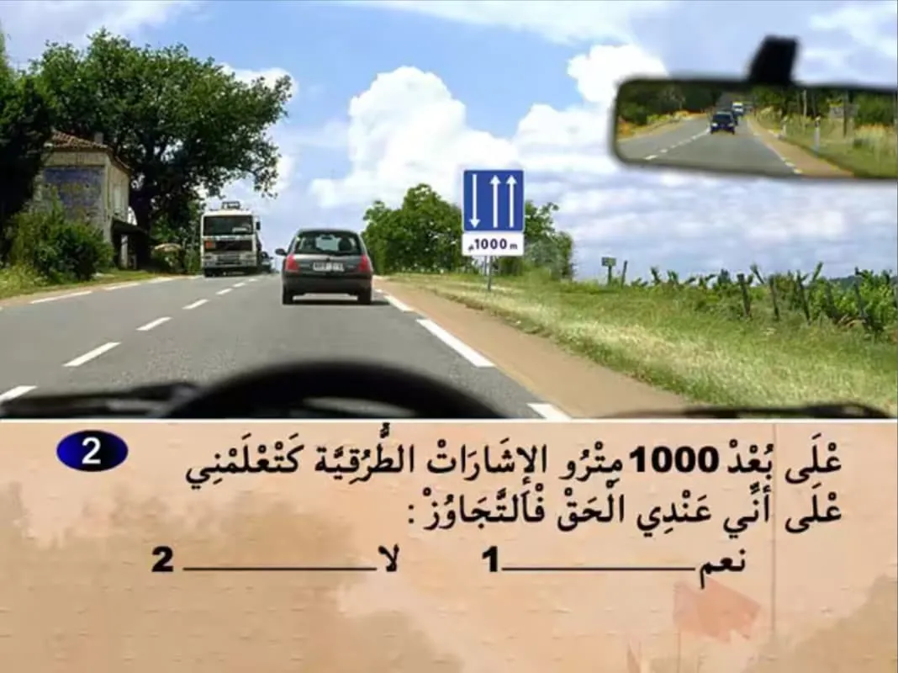
بيّن الجواب
الجواب الصحيح: 1
نحن الان في طريق يوجد بها مسلكين، بالنسبة للإشارة الطرقية العمودية فهي تشير إلى أنه بعد مسافة 1000 متر سوف يزداد مسلك اخر بالنسبة لي وسوف يصبح هنالك مسلكين خاصين في الإتّجاه الذي أسير فيه مقابل مسلك واحد فقط بالنسبة للسيارات القادمة من الإتجاه المعاكس. إذن سوف يصبح هنالك مسلك إظافي يمكنني من أن أقوم بعملية التجاوز.
السؤال 3
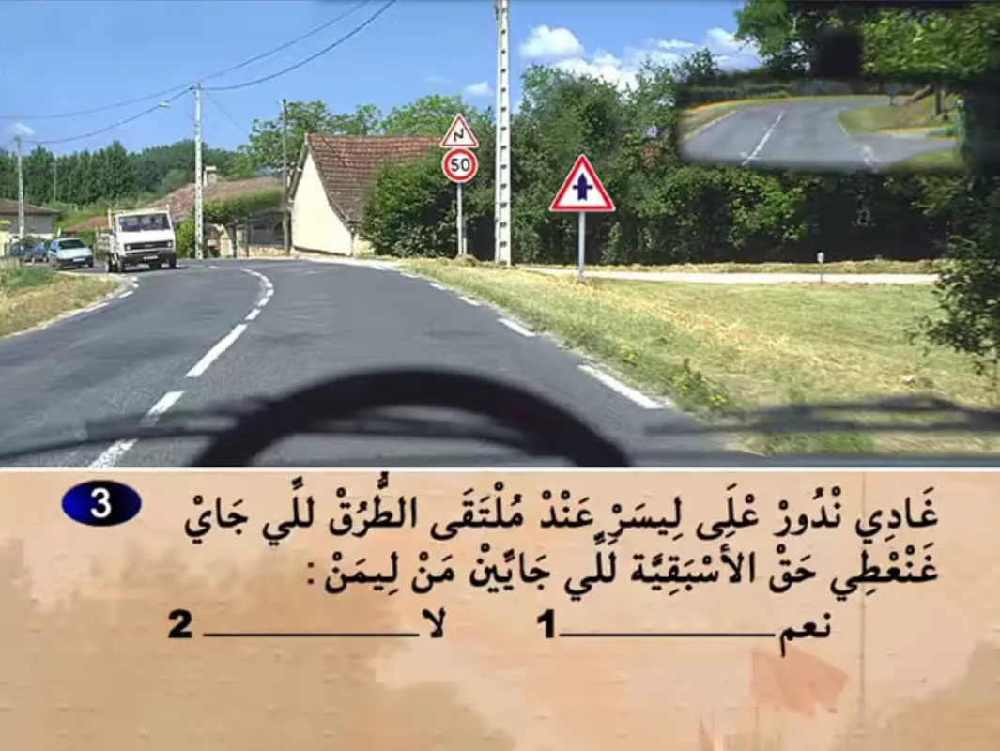
بيّن الجواب
الجواب الصحيح: 2
العلامة الطرقية العمودية تشير إلى أنه لديّ حق الأسبقية في ملتقى الطّرق القادم، في هذه الحالة عندما يكون لدّي حق الأسبقية فلا أعطي حق الأسبقية بالنسبة للعربات القادمة من اليمين وكذلك لا أعطي حق الأسبقية للعربات القادمة من اليسار. الإجابة الصحيح 2.
السؤال 4
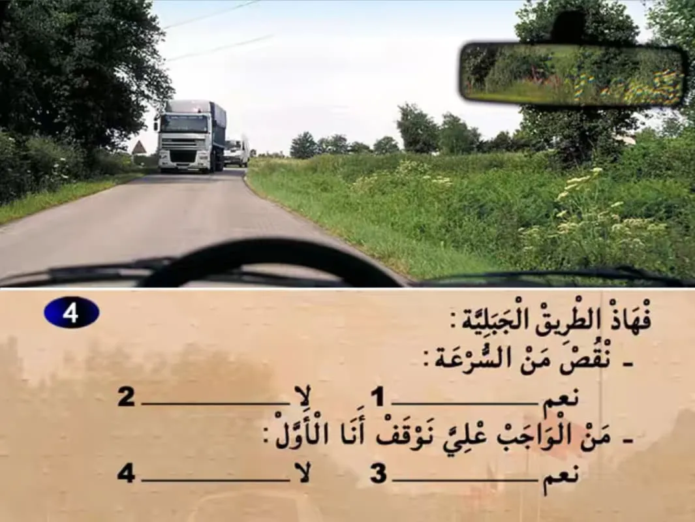
بيّن الجواب
الجواب الصحيح: 1 و 4
بالنسبة للطرق الجبلية فنطبق القاعدة التي تقول: العربات التي تكون في إتجاه الأسفل هي التي تقوم بالوقوف. وبالنسبة للتقابل لكي يكون سهل فيجب علينا الإنقاص من السرعة. وليس من الواجب عليّ في هذه الحالة أن أقوم بالوقوف أنا الأول لأنني لا أتوجه إلى الأسفل، يجب على الشاحنة الوقوف والسماح لي بالمرور أولا.
السؤال 5
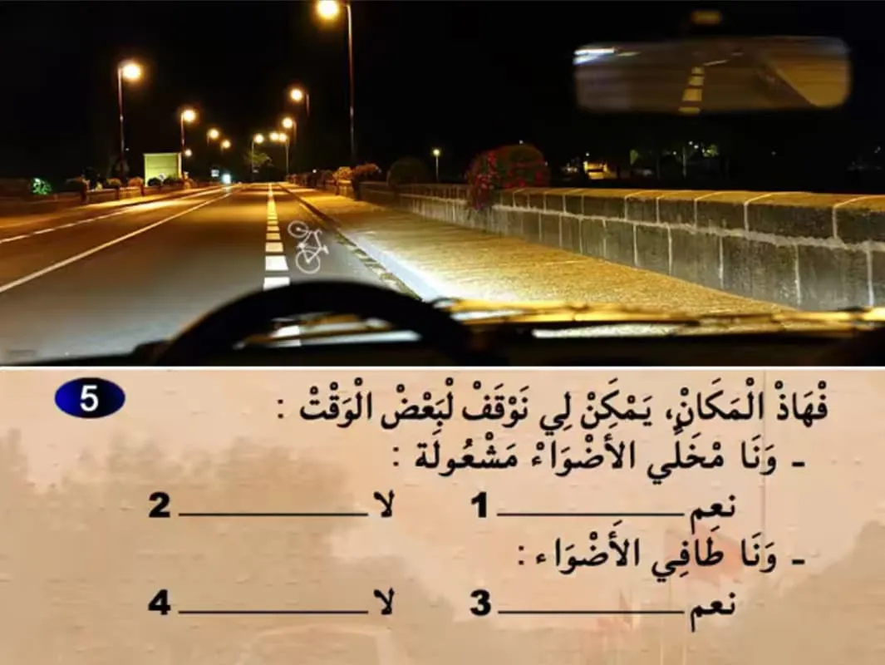
بيّن الجواب
الجواب الصحيح: 2 و 4
نتواجد الان في مسلك خاص بالدراجات (كما يوضّحه التّشوير الأفقي دراجة مرسومة على الأرض)، في الأماكن الخاصة لا يمكننا الوقوف ولا يمكننا التوقّف كذلك.
السؤال 6
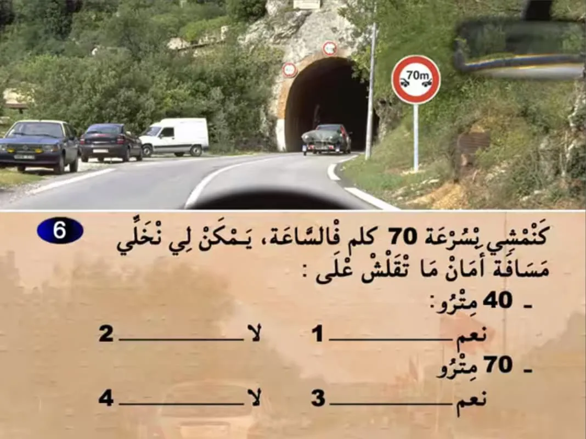
بيّن الجواب
الجواب الصحيح: 2 و 3
بالنسبة لعلامة المنع التي تطبّق من عند العلامة فهي تشير إلى الإجبار لترك مسافة أمان لا تقل عن 70 متر بيني وبين العربة التي تكون أمامي مهما كانت السرعة التي أسير بها. إذن يمكن لي فقط أن أترك مسافة أمان لا تقل عن 70 متر.
السؤال 7
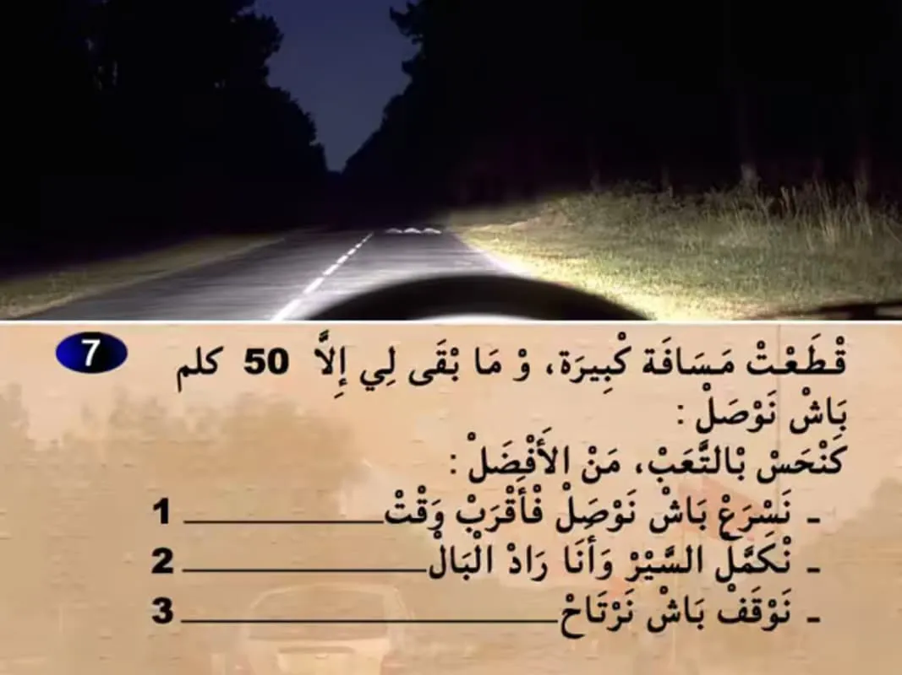
بيّن الجواب
الجواب الصحيح: 3
القانون يقول أنه من الواحب على كل سائق وبعد كل ساعتين على الأقل من السياقة يجب أن يأخد إستراحة 15 دقيقة. إذا قمت بالإسراع وأنا تعب من السياقة فسوف يكون هنالك خطر حادثة سير لأنني سوف أكون أسرع أكثر، كما أنه لا يمكنني إكمال السير لأنني تعب ولا أستطيع الإنتباه كثيرا لذلك سوف أزيد من إحتمال وقوع حادثة سير أيظا إذن في هذه الحالة بما أنني أحس بالتعب فمن الأفضل أن أقوم بالوقوف لكي أرتاح قليلا وبعد ذلك يمكنني أن أكمل السير.
السؤال 8
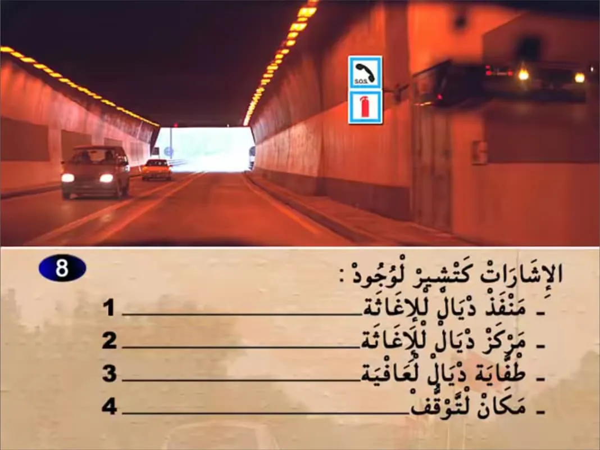
بيّن الجواب
الجواب الصحيح: 2 و 3
بالنسبة لهذه الإشارة الطرقية فهي تشير إلى مركز إغاثة والإشارة الثانية تشير إلى مطفأة حريق.
السؤال 9
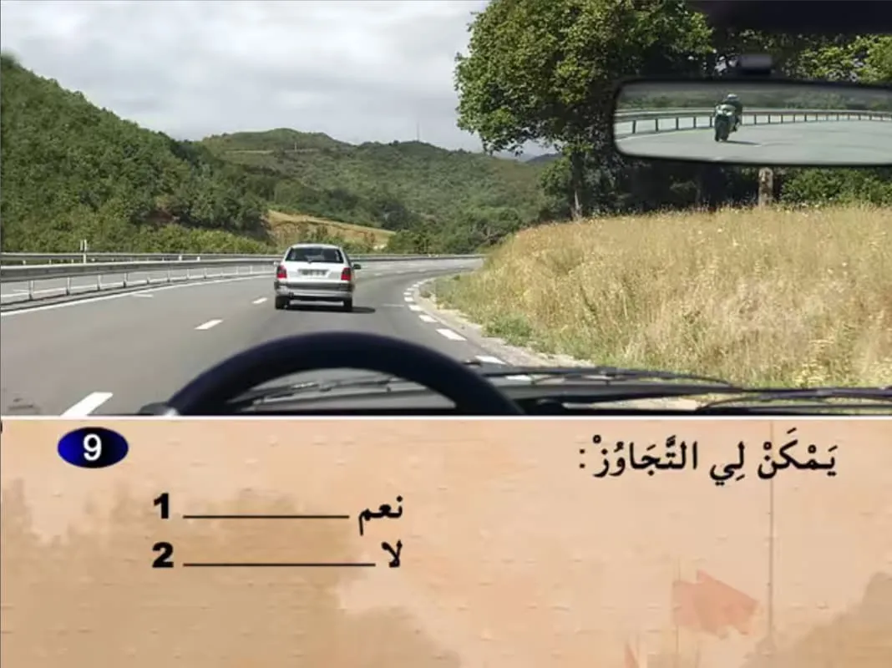
بيّن الجواب
الجواب الصحيح: 2
لا يمكننا التجاوز الان لأنه توجد دراجة نارية قادمة من الخلف تقوم بعملية التّجاوز.
السؤال 10
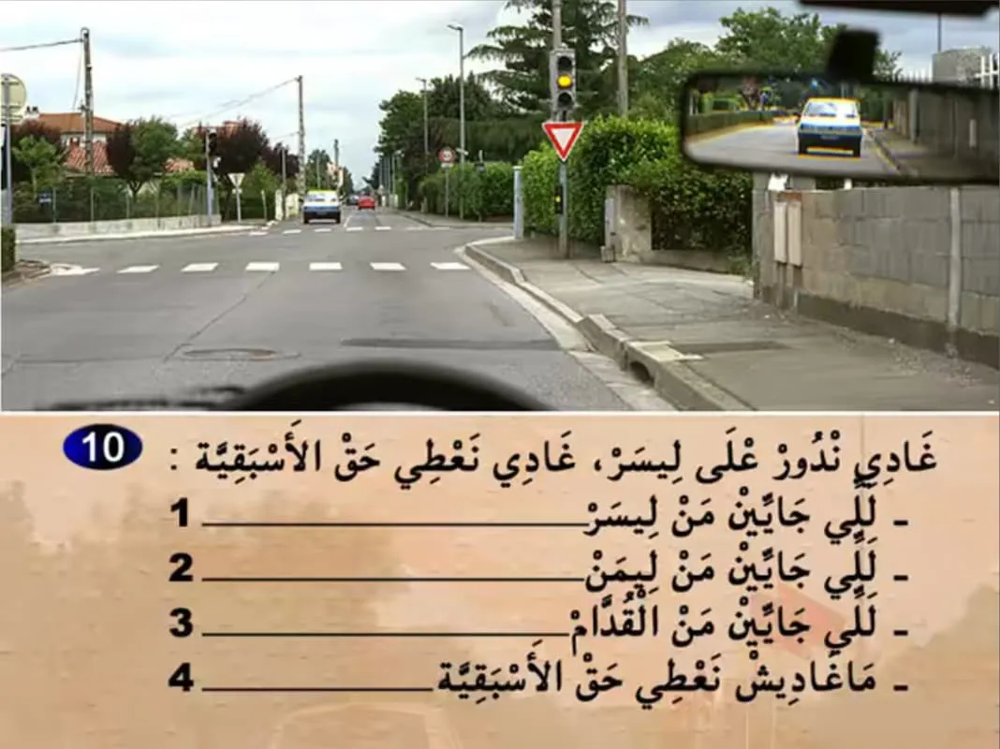
بيّن الجواب
الجواب الصحيح: 1 و 2 و 3
عندما تكون الإشارة الضوية باللون البرتقالي ويكون يرفرف فنقوم بالمرور بحذر، وبما أنه يوجد علامة طرقية تعني أنه ليس لديّ حق الأسبقية فيجب عليّ إعطاء الّأسبقية للعربات القادمة من الجهة اليمنى وكذلك إعطاء حق الأسبقية للعربات القادمة من الجهة اليسرى وكذلك إعطاء حق الأسبقية للعربات القادمة من الأمام لأنني سوف أنعطف إلى اليسار.
السؤال 11
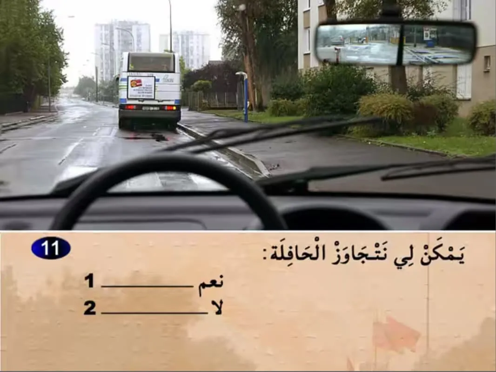
بيّن الجواب
الجواب الصحيح: 1
الحافلة واقفة ولا توجد عربات قادمة من الخلف وكذلك لا توجد عربات قادمة من الإتجاه المعاكس، يمكنني تجاوز الحافلة.
السؤال 12
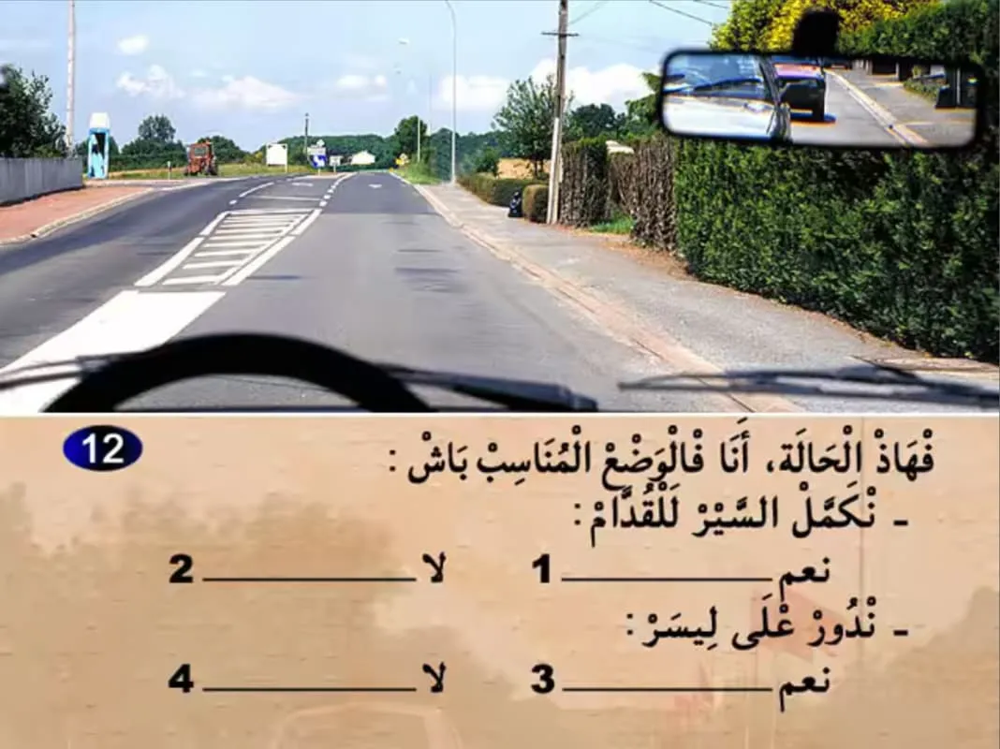
بيّن الجواب
الجواب الصحيح: 1 و 3
يمكنني إكمال السّير إلى الأمام لا توجد إشارة مرورية تمنعني من السير إلى الأمام، بالنسبة للإنعطاف إلى اليسار فيمكنني ذلك عند إنتهاء الخط الأبيض و الخط المتقطع (المساحة الكبيرة التي يوجد فيها خط متقطع) الموجودان على اليسار.
السؤال 13
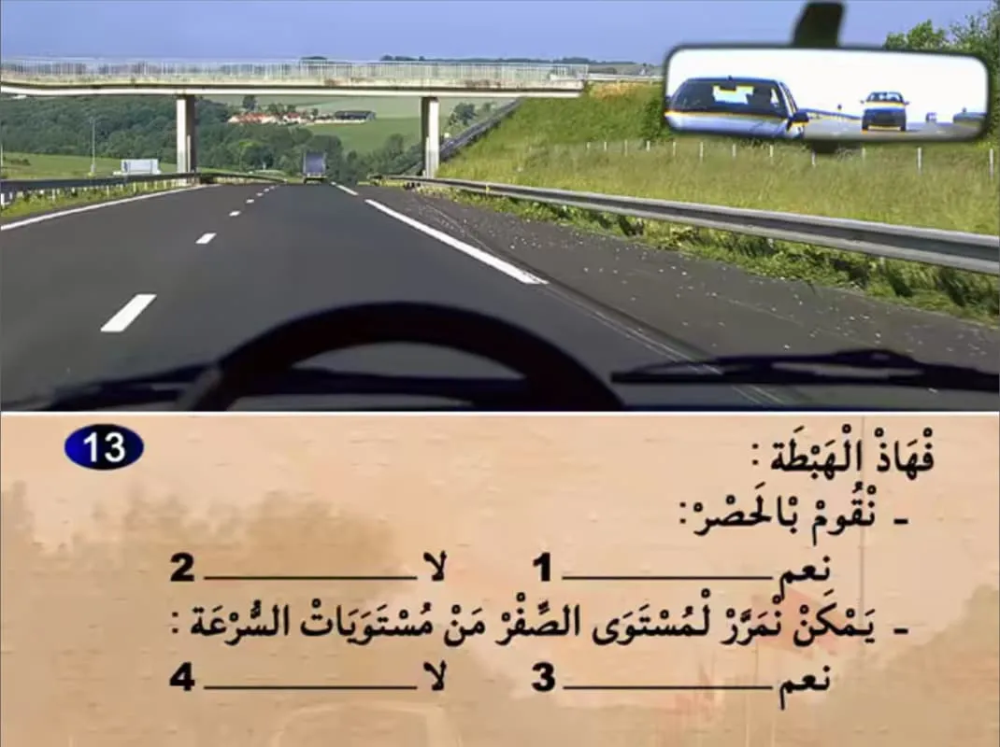
بيّن الجواب
الجواب الصحيح: 2 و 4
نحن نتواجد في هبطة، وفي هذه الحالة لا يمكننا القيام بعملية الحصر لأنه يوجد سيارات من خلفي، فإذا قمت بعملية الحصر فيمكن ان يصطدمو بي من الخلف. ولا يمكننا كذلك تمرير مستوى السرعة إلى الصفر، لانه سوف أفقد السيطرة على السيارة، وكذلك تغيير مستوى السرعة إلى الصفر فهو ينقص من السرعة ويوجد إحتمال أن تصطدم بي السيارات من الخلف.
السؤال 14
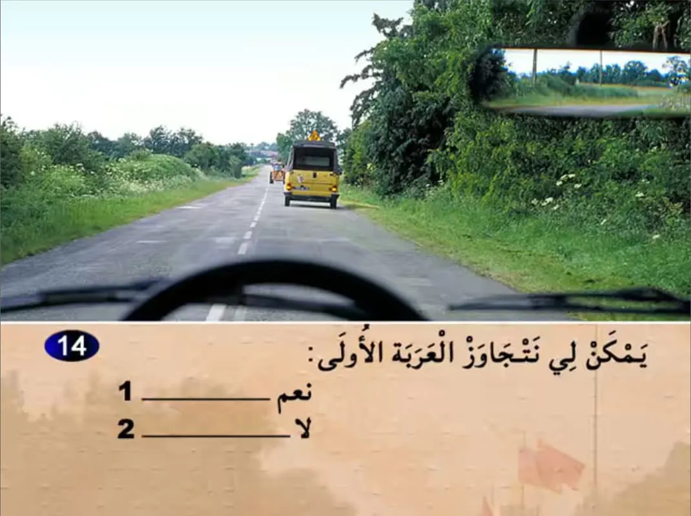
بيّن الجواب
الجواب الصحيح: 1
العربة التي توجد أمامي واقفة كما تظهر الأضواء الخلفية، كما أنّ التشوير الطّرقي الخط المتقطّع يسمح لي بالتّجاوز.
السؤال 15
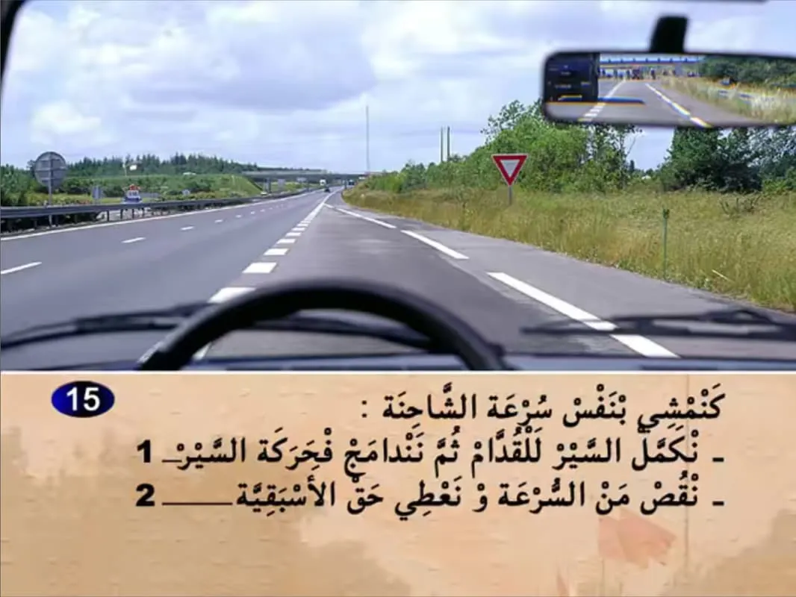
بيّن الجواب
الجواب الصحيح: 1
نتواجد في مسلك الإندماج، الحافلة بطيئية وتسير بنفس السرعة التي أسير بها، في هذه الحالة بما أنها شاحنة من الصنف الثقيل فيمكننا إكمال السير إلى الأمام والإندماج في حركة السير لأننا سوف نزيد في السرعة ونندمج في حركة السّير. (لو كانت سيارة فيجب علينا الإنتظار وإعطائها حق الأسبقية).
السؤال 16
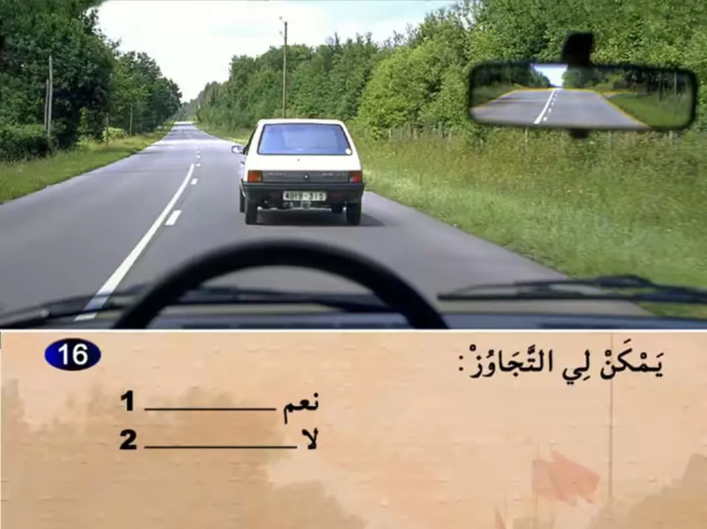
بيّن الجواب
الجواب الصحيح: 1
يوجد 2 خطوط، الخط الذي يعنينا في مثل هذه الحالة هو أول خط، الخط الاول بالنسبة لنا هو خط متقطع وبعد ذلك يوجد خط متصل، الخط المتقطع هو الأول يعني يمكنني أن أتخطاه لا مشكلة وبالنسبة للخط المتّصل فهو خاص بالعربات القادمة من الإتّجاه المعاكس، في بعض الحالات يوجد الخط المّتصل هو الأول وبعد ذلك الخط المتقطع، في هذه الحالة لا يمكنني أن اتخطاء. دائما أرى من هو أول خط بالنسبة لي هل متقطع ام متصل. في هذه الحالة أول هو بالنسبة لي هو متقطّع كما أنه لا توجد سيارات قادمة من الخلف تقوم بعملية التجاوز ولا توجد سيارات قادمة في الإتجاه المعاكس إذن يمكنني التّجاوز.
السؤال 17
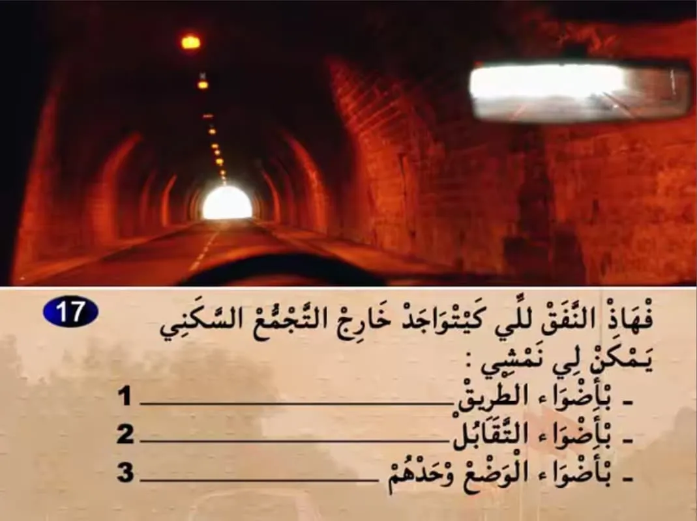
بيّن الجواب
الجواب الصحيح: 2
في حالة وجودنا في النفق فدائما نقوم بإستعمال أضواء التقابل مع إمكانية إستعمال أضواء الوضع معه، لا يمكن السير بأضوءا الوضع وحدهم في النفق، الجواب الصحيح هو رقم 2.
السؤال 18
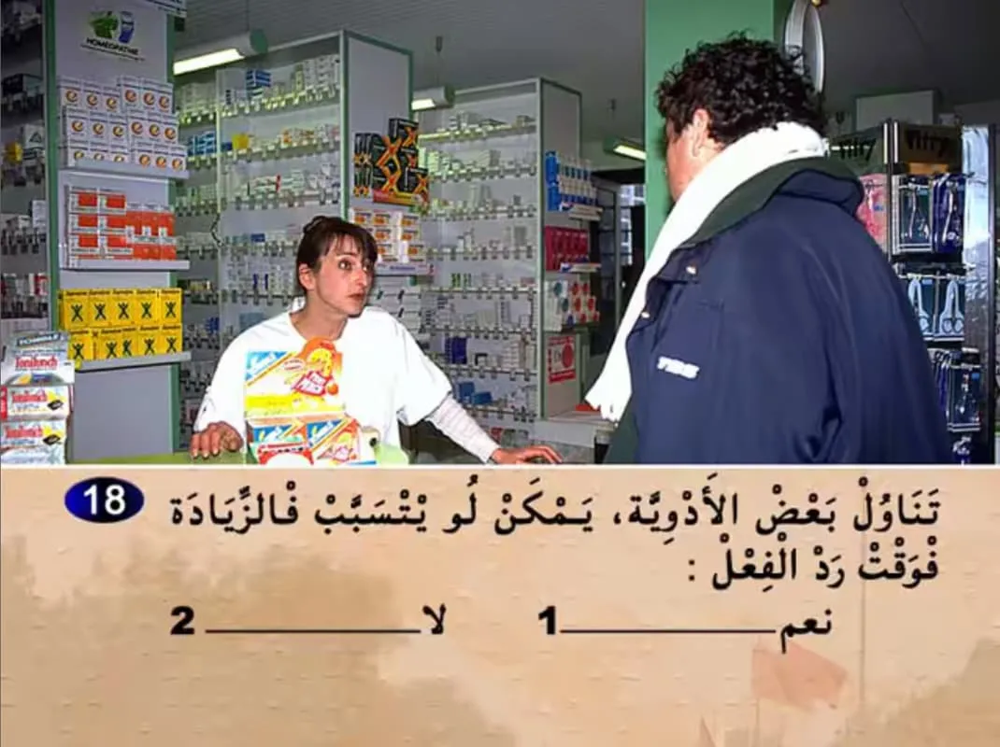
بيّن الجواب
الجواب الصحيح: 1
بطبيعة الحال بعض الأدوية بعد تناولها يمكن أن تسبب لي النوم والعياء، ويصبح وقت رد الفعل أطول.
السؤال 19
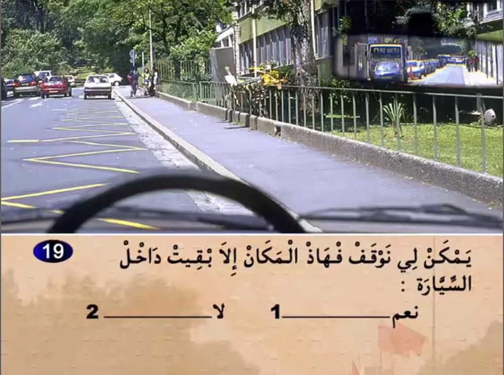
بيّن الجواب
الجواب الصحيح: 2
التشوير الطرقي الأفقي الخطوط الصفراء فهو يشير إلى مكان خاص للحافلات، الأماكن الخاصة يمنع فيها الوقوف والتوقّف.
السؤال 20
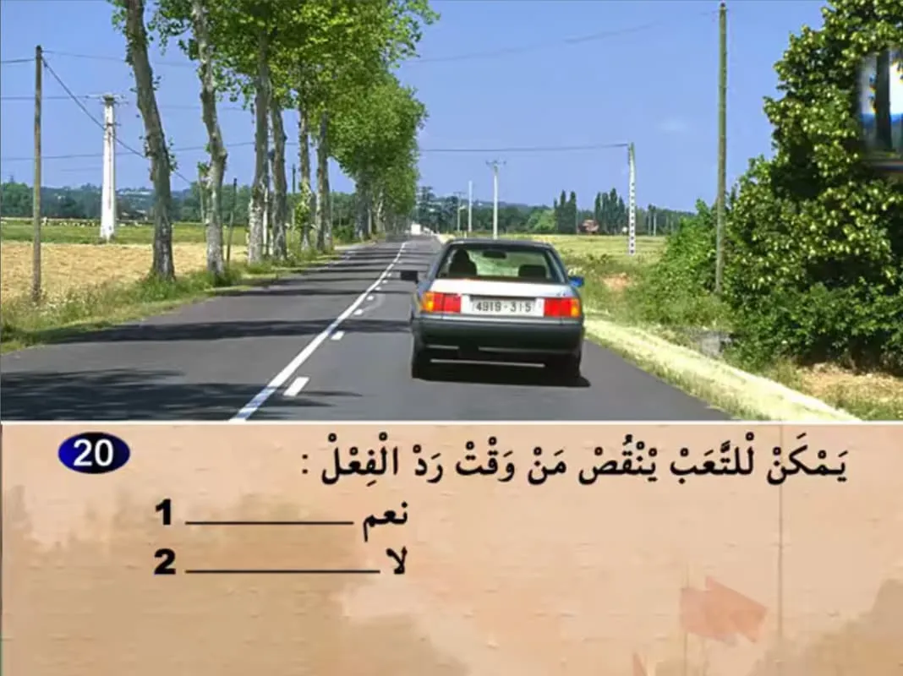
بيّن الجواب
الجواب الصحيح: 2
بالنسبة للتعب فيمكن له أن يزيد من وقت رد الفعل وليس الإنقاص منه. لأنه عندما نكون متعبين فلكي نقوم ب رد فعل فسوف نحتاج وقت أطول لإتخاد قرار. إذن التعب يزيد من وقت رد الفعل.
السؤال 21
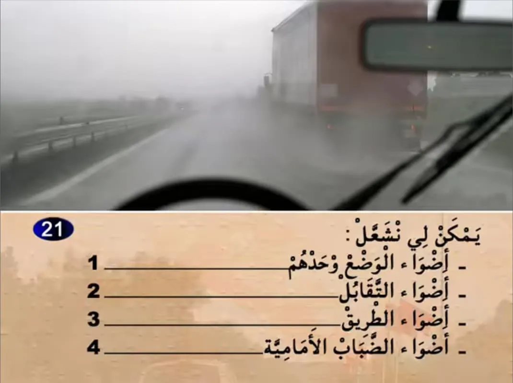
بيّن الجواب
الجواب الصحيح: 2 و 4
أثناء هطول الأمطار، نقوم بالسّير بإستعمال أضواء التّقابل وأضواء الضباب الأمامية، بالاضافة لإمكانية إستعمال أضواء الوضع مع أضواء التقابل او الضبابة، لا يمكن إختيار الإختيار الأول أضواء الوضع وحدهم لانه لا يمكننا السير بأضواء الوضع وحدهم، من الواجب في مثل هذه الحالات مثل المطر ان نقوم بإستعمال أضواء الوضع مع أضواء التقابل إذا كنا نريد إستعمال أضواء الوضع، ولا يمكن إستعمال أضواء الوضع وحدهم والسير بهم في مثل هكذا أجواء ممطرة (لو كان الإختيار أضواء الوضع، بدون كلمة وحدهم فيمكننا إختيارهم) .
⚠️ ملاحظة: يمكن استعمال أضواء الوضع في آن واحد مع أضواء الطريق وأضواء التقابل والأضواء الخاصة بالضباب، ويمكن كذلك استعمالها وحدها عند وقوف المركبة أو توقفها أو عندما تكون ظروف الإنارة على الطرق، ماعدا الطريق السيار أو الطرق ذات المسالك الخاصة. الجواب الصحيح هو رقم 2 و 4.
السؤال 22
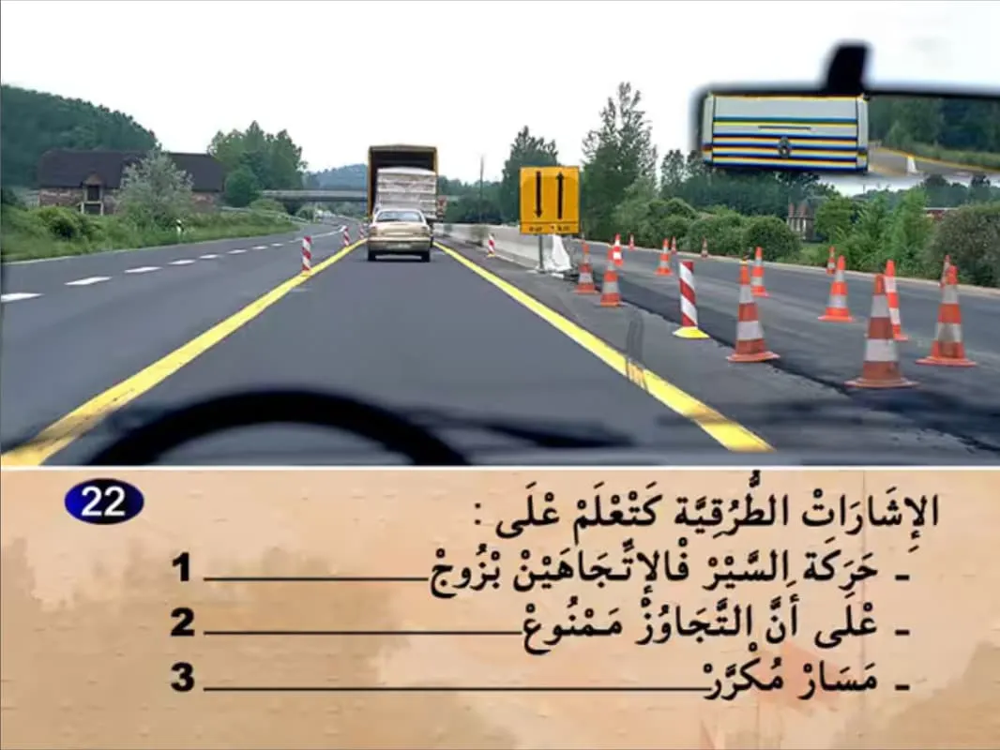
بيّن الجواب
الجواب الصحيح: 1 و 2
بالنسبة للعلامة الطرقية العمودية المؤقتة فهي تشير إلى أن حركة السّير في الإتجاهين، كما أن التشوير الأفقي الخط المتّصل يمنعنا من عملية التجاوز.
السؤال 23
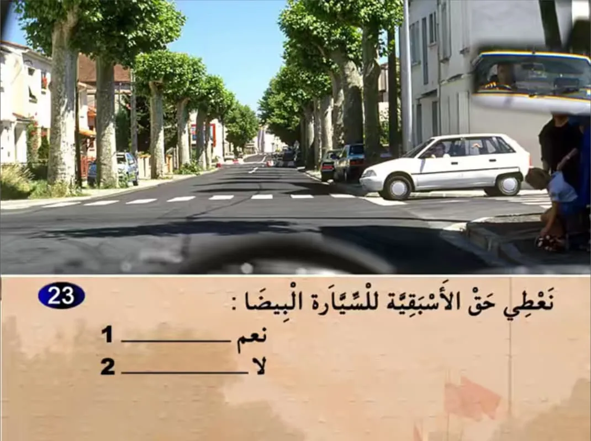
بيّن الجواب
الجواب الصحيح: 2
في ملتقيات الطرق الأسبقية دائما للعربات القادمة من الجهة اليمنى، لكن في هذه الحالة السيارة التي تتواجد على الجهة اليمنى لديها علامة قف (الخط المرسوم على الأرض)، لذلك في هذه الحالة لا أعطي حق الأسبقية للسيارة البيضاء.
السؤال 24
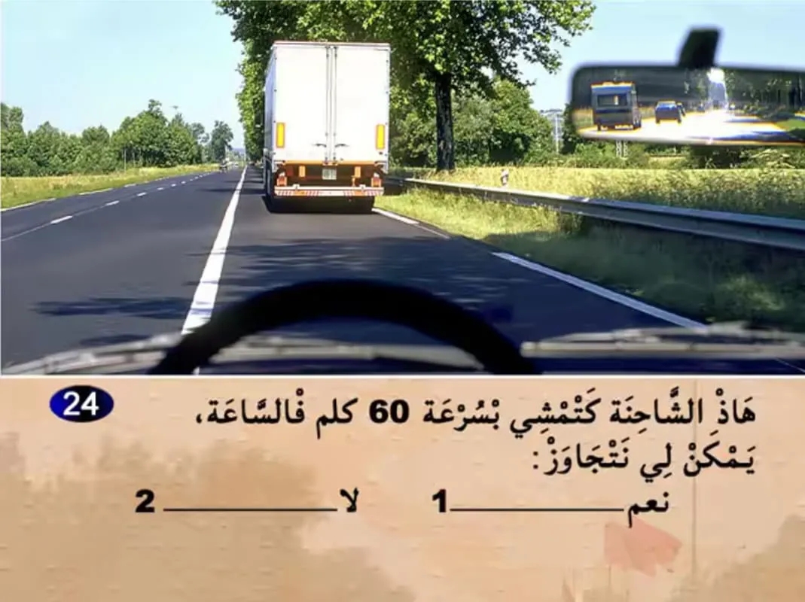
بيّن الجواب
الجواب الصحيح: 2
يوجد تشوير أفقي خط متّصل يمنعني من القيام بعملية التجاوز.
السؤال 25
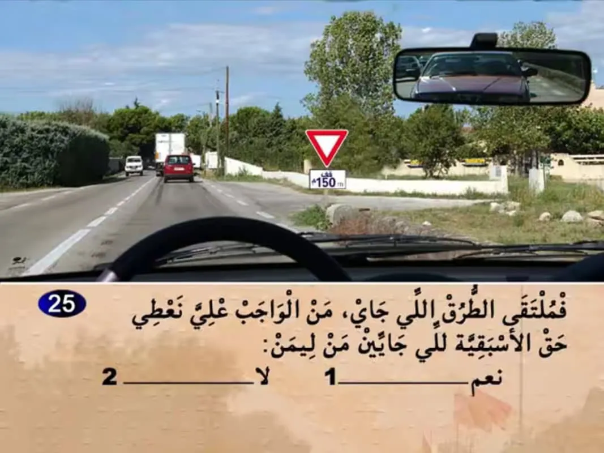
بيّن الجواب
الجواب الصحيح: 1
بالنسبة للإشارة الطرقية العمودية فهي تشير إلى أنه ليس لدي حق الأسبقية على بعد 150 متر في ملتقى الطرق القادم، يجب عليّ إعطاء حق الأسبقية للعربات القادمة من اليمين.
السؤال 26
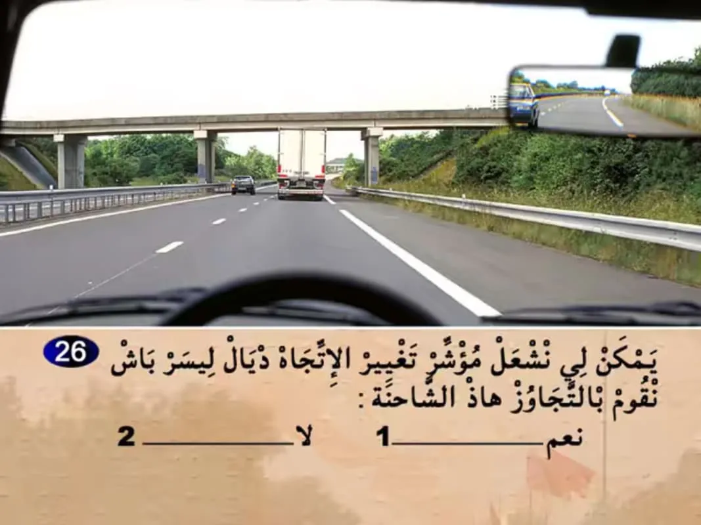
بيّن الجواب
الجواب الصحيح: 2
كما تظهر المرآة العاكسة فتوجد سيارة تقوم بتجاوزي وهي قريبة منّي، لذلك لا يمكنني تشغيل مؤشر تغيير الإتجاه لليسار لكي أتجاوز الشاحنة، لا يمكنني التجاوز الان.
السؤال 27
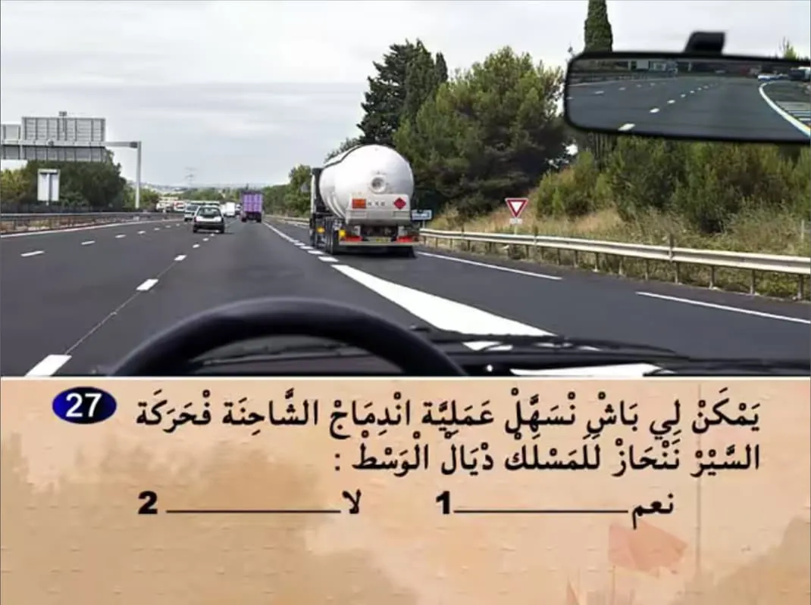
بيّن الجواب
الجواب الصحيح: 1
لا يوجد مشكلة في ذلك، المسلك المتواجد في الوسط فارغ ولا توجد سيارات قادمة من الخلف، لكي أسهّل إندماج الشاحنة فلا بأس في أن أنحاز إلى المسلك الوسط.
السؤال 28
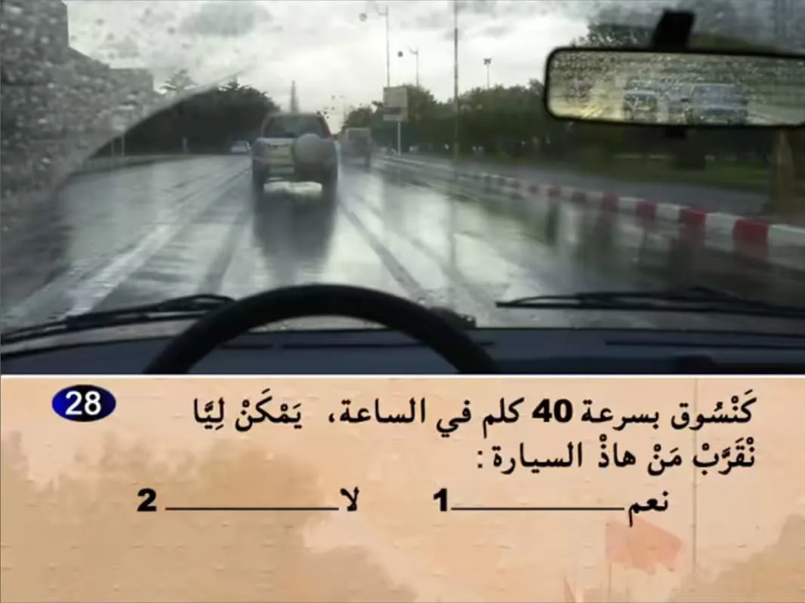
بيّن الجواب
الجواب الصحيح: 2
يوجد مطر، في هذه الحالة يجب علينا زيادة مسافة الأمان أي الإبتعاد عن السيارة التي توجد أمامنا مهما كانت السرعة التي نسير بها، وليس الإقتراب منها.
السؤال 29
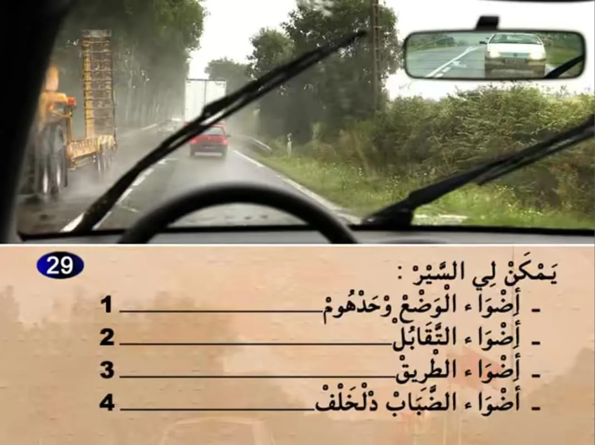
بيّن الجواب
الجواب الصحيح: 2
أثناء هطول الأمطار، نقوم بالسّير بإستعمال أضواء التّقابل وأضواء الضباب الأمامية، بالاضافة لإمكانية إستعمال أضواء الوضع مع أضواء التقابل او الضبابة، في حالات وجود المطر يمكننا إستعمال أضواء الضبابة الأمامية وليس الخلفية. لا يمكن إختيار الإختيار الأول أضواء الوضع وحدهم لانه لا يمكننا السير بأضواء الوضع وحدهم، من الواجب في مثل هذه الحالات مثل المطر ان نقوم بإستعمال أضواء الوضع مع أضواء التقابل إذا كنا نريد إستعمال أضواء الوضع، ولا يمكن إستعمال أضواء الوضع وحدهم والسير بهم في مثل هكذا أجواء ممطرة (لو كان الإختيار أضواء الوضع، بدون كلمة وحدهم فيمكننا إختيارهم) .
⚠️ ملاحظة: يمكن استعمال أضواء الوضع في آن واحد مع أضواء الطريق وأضواء التقابل والأضواء الخاصة بالضباب، ويمكن كذلك استعمالها وحدها عند وقوف المركبة أو توقفها أو عندما تكون ظروف الإنارة على الطرق، ماعدا الطريق السيار أو الطرق ذات المسالك الخاصة. الجواب الصحيح هو رقم 2.
السؤال 30
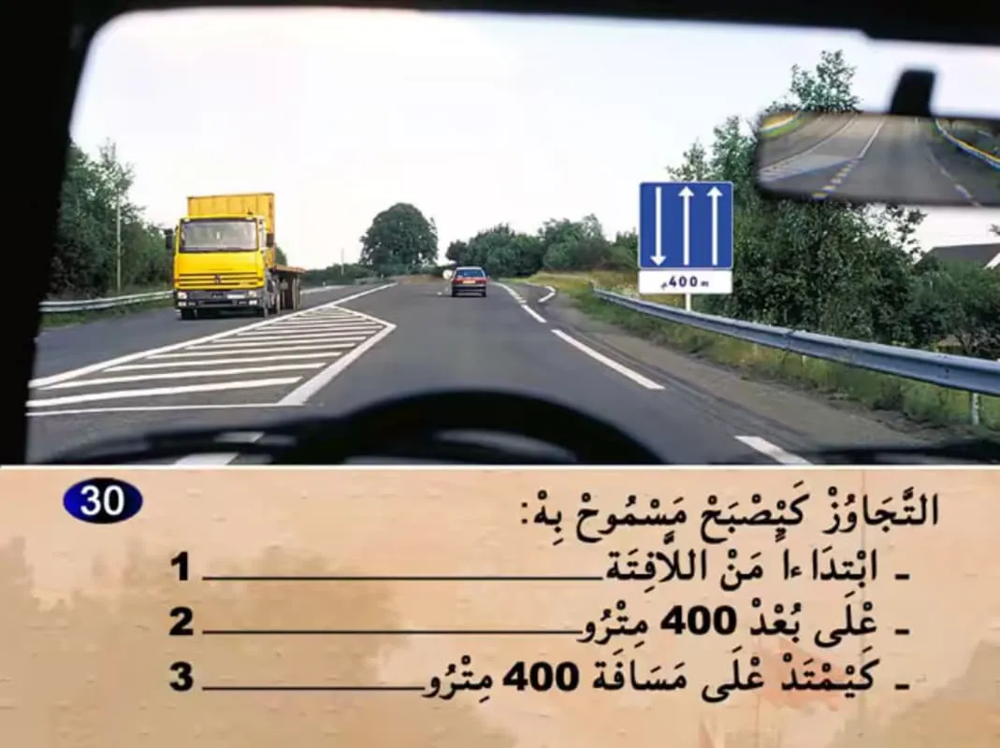
بيّن الجواب
الجواب الصحيح: 2
بعد 400 متر سوف يزداد مسلك اخر للسير بالنسبة لنا، الان لا يمكننا التجاوز لأن التشوير الأفقي الخط المتّصل يمنعنا من ذلك، بعد 400 متر وعندما يصبح السير في مسلكين فيمكننا التجاوز.
السؤال 31
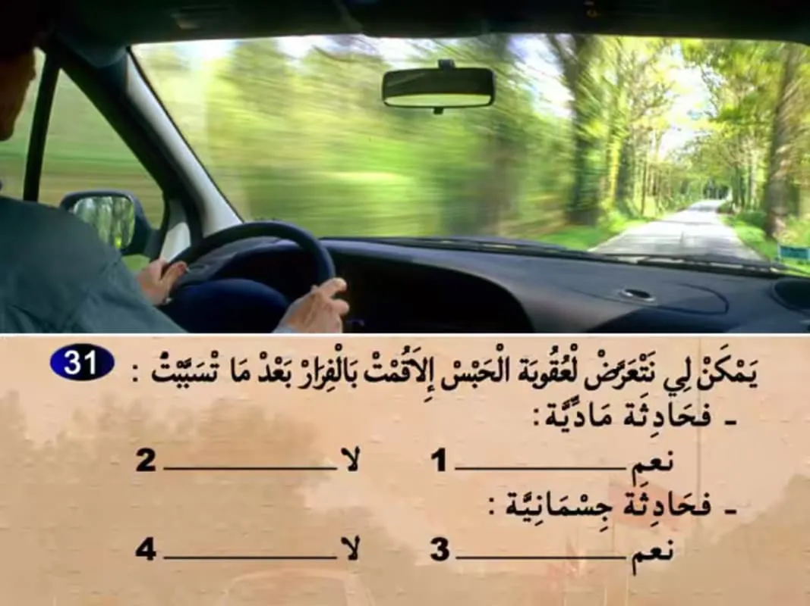
بيّن الجواب
الجواب الصحيح: 1 و 3
بالنسبة للفرار أو الهرب بعد التسبب في حادثة سير، فالقانون قد يعرضني إلى عقوبة السجن مهما كانت الخسائر، مادية أو جسمانية فأنا معرض لعقوبة السجن.
السؤال 32
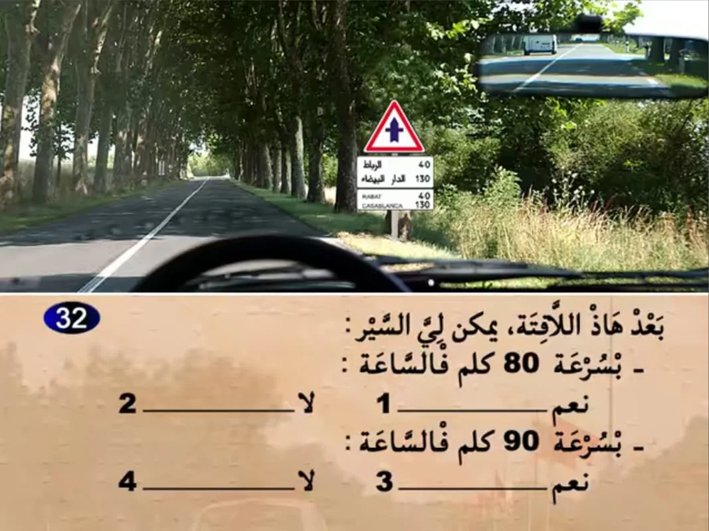
بيّن الجواب
الجواب الصحيح: 1 و 3
بالنسبة للسّير في طريق وطنية فيمكننا السير بسرعة أقصاها 100 كلم في الساعة، إذن في هذه الحالة يمكنني السير ب 80 كلم في الساعة وكذلك يمكنني السّير بسرعة 90 كلم في الساعة.
السؤال 33
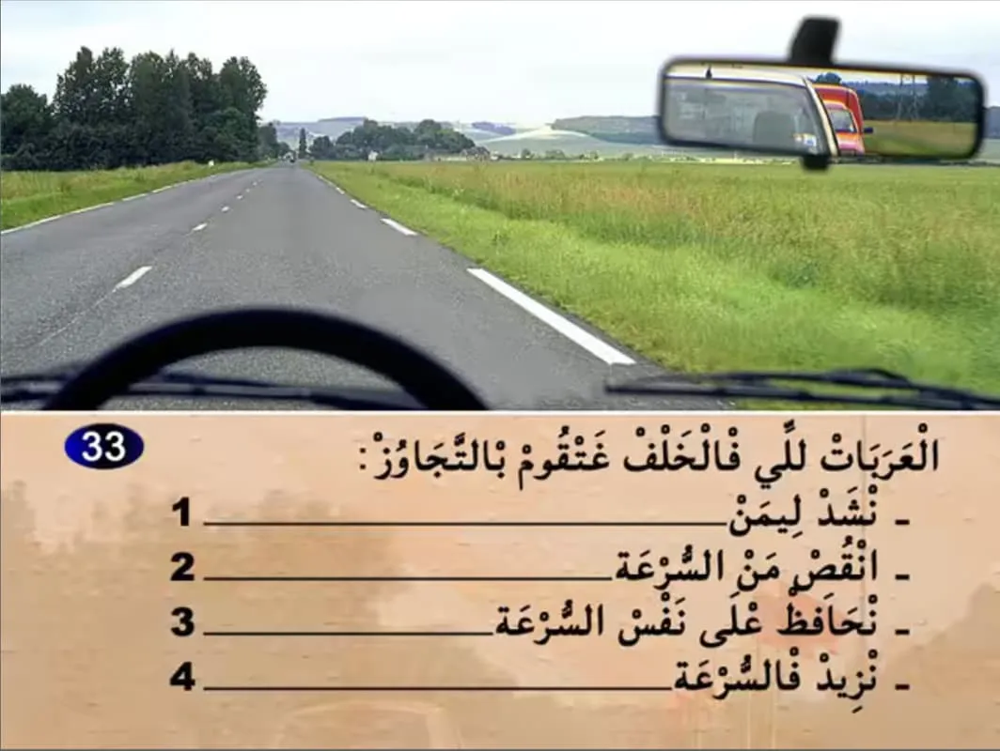
بيّن الجواب
الجواب الصحيح: 1 و 3
عندما تريد سيارات بتجاوزي فيجب عليّ في هذه الحالة أني أبقى في يميني، ونحافظ على نفس السرعة التي أسير بها. الإجابة الصحيحة هي 1 و 3.
السؤال 34
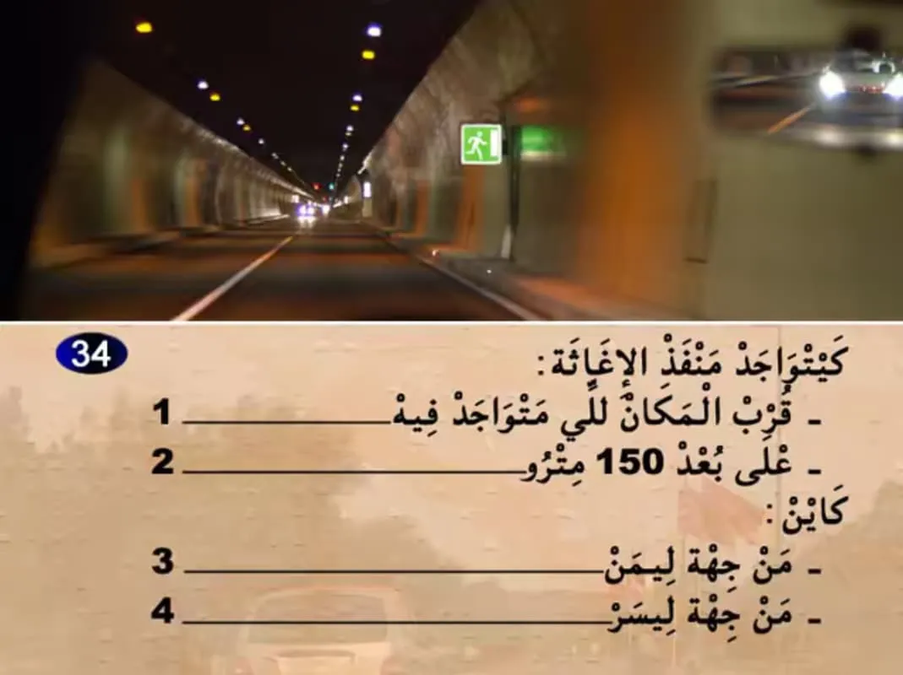
بيّن الجواب
الجواب الصحيح: 1 و 3
بالنسبة لعلامة منفذ الإغاثة فيشير إلى مكان المنفذ عند العلامة ويتواجد على الجهة اليمنى التي نسير فيها.
السؤال 35
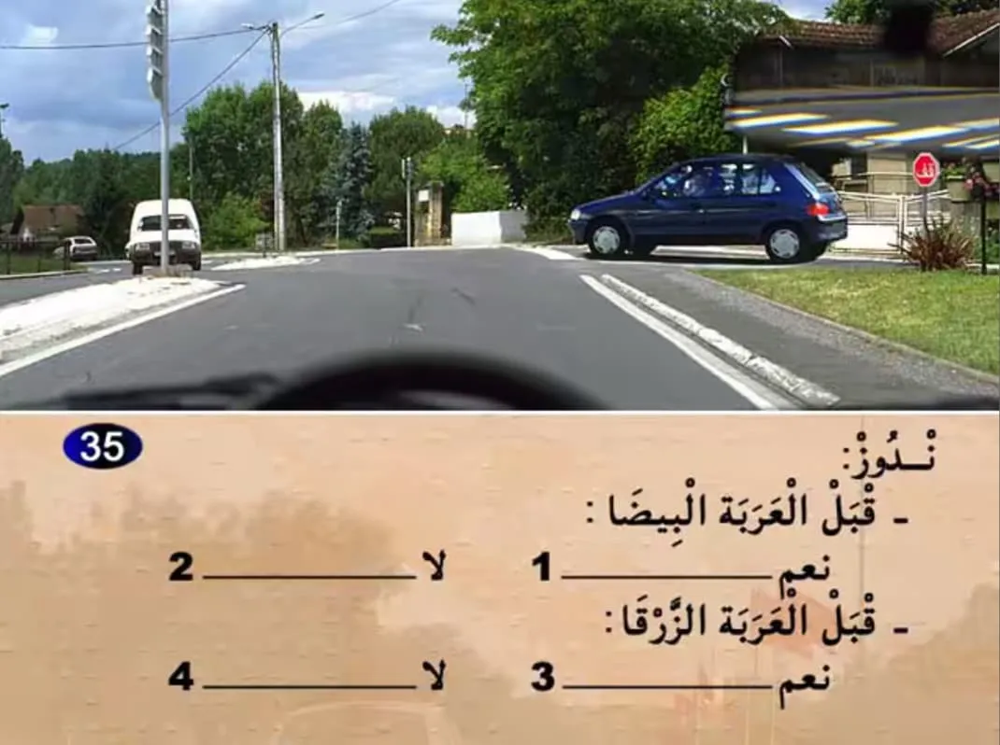
بيّن الجواب
الجواب الصحيح: 1 و 3
في ملتقى الطرق فالأسبقية لي في هذه الحالة، لأن السيارة الزرقاء لديها علامة قف، وبالنسبة للسيارة البيضاء فتتواجد على يساري ولا أعطي لها حق الأسبقية كذلك، إذن في هذه الحالة أقوم بالمرور أنا الأول ولا أعطي حق الأسبقية للسيارتين.
السؤال 36
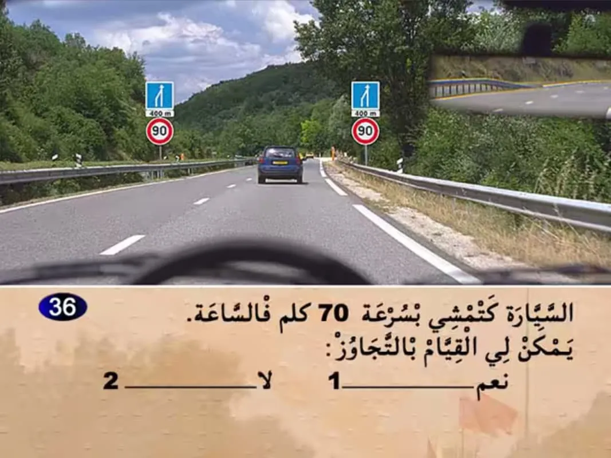
بيّن الجواب
الجواب الصحيح: 1
السيارة تسير بسرعة 70 كلم في الساعة، والسرعة القصوى كما تشير إليه العلامة الطرقية العمودية فهي 90 كلم في الساعة، إذن يمكنني إذن القيام بالتجاوز. (بالنسبة للافتة الزرقاء التي تشير إلى تقليص المسلك بعد 400 متر، فيمكننا التجاوز، لو كان هنالك 300 متر أو 200 متر فلا يمكننا التجاوز). يمكنني التجاوز لأن السرعة القصوى هي 90 كلم في الساعة والسّيارة تسير فقط ب 70 كما أن تقليص المسلك على بعد 400 متر.
السؤال 37
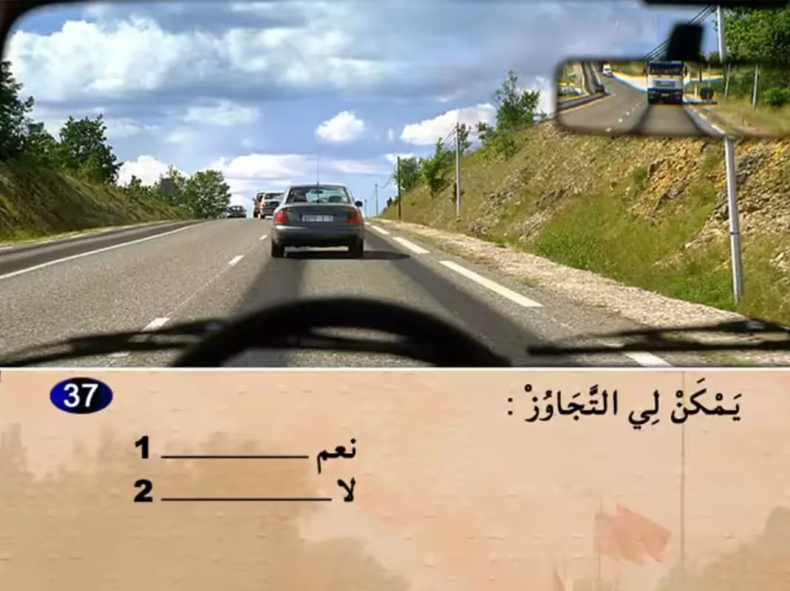
بيّن الجواب
الجواب الصحيح: 1
الطريق ذات إتجاه واحد (الخط المتصل في أقصى اليسار) والتشوير الأفقي الخط متقطّع يسمح لي بالتّجاوز، إذن يمكنني التّجاوز.
السؤال 38
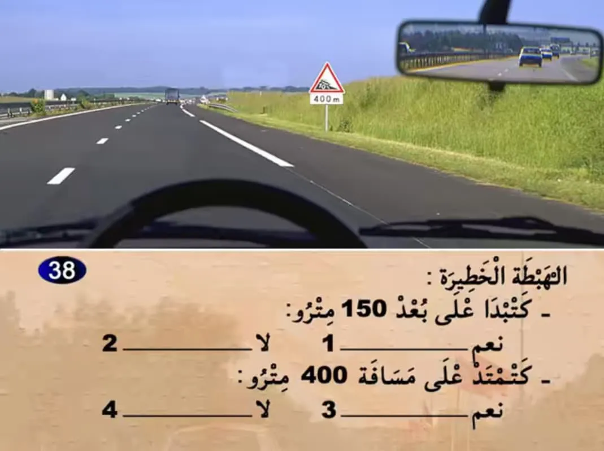
بيّن الجواب
الجواب الصحيح: 2 و 4
بالنسبة للعلامة الطرقية العمودية فتعني خطر الإنحدار (الهبطة) على بعد 150 متر ولكن في هذه الحالة توجد علامة تكميلية تقول أن الخطر سوف يكون على بعد 400 متر. (وليس على مسافة).
السؤال 39
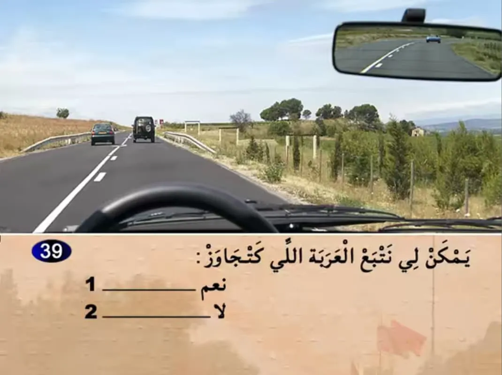
بيّن الجواب
الجواب الصحيح: 2
في الطريق ذات إتجاهين، لا يمكننا إتباع سيارة تقوم بعملية التجاوز (عكس الطريق السيار).
السؤال 40
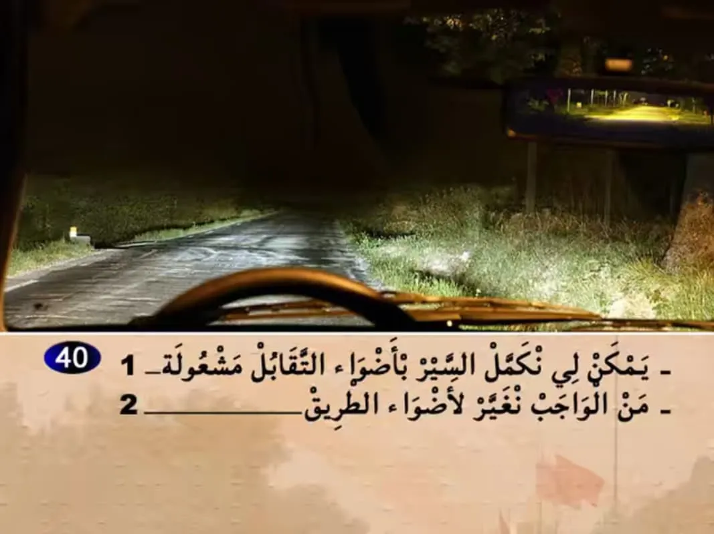
بيّن الجواب
الجواب الصحيح: 2
في هذه الحالة فالطريق مظلمة جدا، فمن الواجب عليّ في هذه الحالة إستعمال أضواء الطريق.